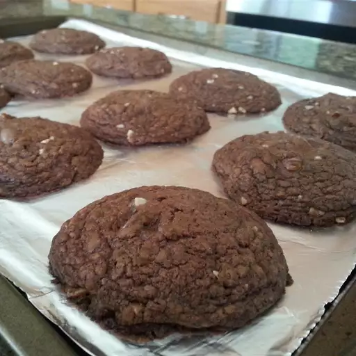

My name is Andreea Mocanu I'm 21 years old, and I want a puppy.
I don't really like to talk about myself because I don't think there's much to tell and I don't want to bore you either. I'm a pretty normal person I think and I like to make people smile. If you've seen this you've probably seen my website so thank you for your time.
I'll leave you here a cooking recipe that maybe you get hungry in the meantime. I was definitely hungry.
Preheat the oven to 350 degrees F (175 degrees C). Line 2 baking sheets with aluminum foil or parchment paper.
Cream butter and sugar in a medium bowl with an electric mixer until light and fluffy. Add egg and vanilla extract; beat well. Mix in chocolate-hazelnut spread until well-combined. Gradually mix in flour and cocoa powder. Stir in chocolate chips and hazelnuts.
Drop spoonfuls of dough 2 inches apart onto the prepared baking sheets.
Bake in the preheated oven for 8 minutes. Turn the oven off and allow the cookies to sit in the oven for 2 minutes more. Serve cookies warm or transfer to a wire rack to cool completely.
